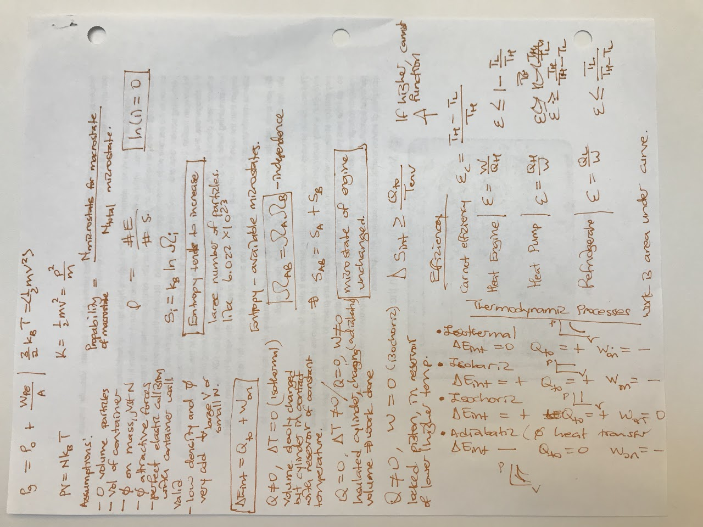

Live → Blog
July 19, 2019

About a month ago, I walked across the stage at the Commencement Ceremony for the Management Science and Engineering department at Stanford to pick up my empty degree case. I owned the moment: paying attention to the way my feet kissed the earth in gratitude, while taking in the ululations of Mrs Chamme, and pausing at the end of the stage long enough for Owen and Amber to snap photos of me. Yes, deep down there was a part of me that knew the job was not done yet since I had one outstanding requirement. This morning I took my final exam to my final class of my undergraduate career at Stanford and with the results in, I can now properly celebrate a journey well traveled. The photo above is my cheat sheet that I used in the exam. Oh Physics! In my earlier years, I excelled at Physics. But this class was painful, especially since it was accelerated. I will resist the urge to try and figure out what lessons I can extract from taking an accelerated class alongside my normal life - which is itself intense. Okay, one lesson: unless you use knowledge, you lose it. If I have learned anything from my last dance with Physics, is the need to keep revisiting areas of knowledge I anticipate needing to keep them at the tip of my brain. But this post is not about how to learn, it is about acknowledging that I have fulfilled all the requirements for my Bachelor of Science degree in Management Science and Engineering from Stanford University. This Zebra has earned its stripes!
I refer to myself as a zebra because that is the national animal of Botswana, my birthplace and ground zero for my journey. This is a celebration of the visionary leaders of my country who prioritized education and made it possible for a poor widow's son such as myself to have a fair shot at success. It is a celebration of the teachers, formal and informal such as my older brother Donald, who encouraged and cultivated my curiosity. Especially my teachers from Seepapitso Senior, who bought into my crazy dream that I was going to study abroad and went beyond the call of duty to get me there. I celebrate all the people in my village who used to inflate my ego, affirming both my beauty and my intelligence, thereby concluding that I was destined for prestigious institutions such as Oxford University. It is those affirmations that gave me the confidence to even begin to dream that there could be life beyond my village. I celebrate my friends who pushed me to do my very best. From those who, with their friendly competition, threatened to dethrone me as the best student in my school, and some argued in my village, such as Atlang, Batho, Maxwell, and Pego; to those who literally carried me across the finish line when failure threatened to kill my dreams such as Kago and Koketso. This is a celebration of those individuals who welcomed me and helped me adjust when I was struggling to adapt in Costa Rica, such as Chisomo, Wabei, and Kelebogile. It is a celebration of the best teacher one can ask for, Heidi, who reminded us that it was possible to go where we wanted to go. It is a celebration of Ingrid who helped me overcome the defeated confidence from my previous major failure and apply to Stanford even though I had neither the GPA nor the SAT scores for it.
Stanford! First I am proud of myself for finishing my degree in 4 years despite all the curve balls that life threw at me. I started Stanford a little over 3 months after a non-consensual sexual encounter in Costa Rica, which at the time had turned my world upside down. At the same time, I was coming to terms with my mother's early onset dementia that was rapidly robbing her of her personhood. How was it that after everything Sis Mos has done for me so I can follow my ambition to Costa Rica and then to Stanford, she could not be well enough to witness and share in on these successes? Even right now as I write this, there is a bit of sadness that I cannot share this with her. But despite starting off Stanford on such a note, I rose more than I fell. I am particularly grateful to Jan, who connected me with my Head Doctor directly. So I did not have to deal with the Stanford system for accessing mental health services, which I have heard is frustrating if anything. I cannot imagine how I would have survived Stanford without my Head Doctor. She has helped me work through some difficult experiences, including some that occurred during my time here. I was also blessed with a support system here at Stanford and beyond. I want to recognize my MasterCard Foundation Scholars Community, my colleagues and friends from the Stanford Center for Professional Development, and my friends in the broader African community. Attempting to name all the people who have carried me through Stanford is like trying to count the number of stars in a Kanye night sky. But I want to especially recognize my dear friend Annalee, who was the most understanding person when it came to my mother's illness.
Stanford was not a walk in the park! It was hard. I even completely failed one class twice. (CS 103: Mathematical Foundations of Computing). But a lot of the failure I have experienced at Stanford has helped me refine what matters to me. It has served as a guardrail in moments when I was trying to follow the trends, and pointed me in a direction that was a bit closer to where my heart really wants to go. Even if you take a look at my resume at the moment, it is not that of a "typical" Stanford student. There are no internships from big tech, consulting companies, or investment banks. Not that there is anything wrong with those, and in fact I foresee myself passing through at least one of those industries in the near future. But that my curiosity drove me in other directions. I will always remain grateful to Stanford for providing endless opportunities to follow my curiosity to the ends of the world: from learning about community finance in the context of an emerging economy in Sri Lanka to working on research project to understand the birth of the technology entrepreneurship wave that is currently taking over East Africa. I have had mentors, such as Suzanne, Pam, and Tim, who have guided my reflections regarding the eternal internal battle between the deep yearning to be a useful instrument to the community that made me in its quest to transcend economic poverty and my own ambition for a comfortable life as a full time house husband. The one great take away from all of my successes and failures at Stanford, is a deep understanding that my intelligence is the slow kind. The kind that connects the dots over extended reflections instead of on-demand. Overall, I can say Stanford was a success because it left me with more questions than answers.
As I have alluded to on my Gratitude Wall, the story of Tumisang Ramarea is a celebration of community. We have completed one milestone. Next up, I am getting my Masters Degree from Stanford and then moving on from the academic life. I celebrate all of you, and I want to dedicate this graduation and degree to my mother, Sis Mos. Who woke up every morning for 12 years, including in the very dead of winter, to boil water outside for me, sometimes with dried cow dung because we did not have firewood. I guess I will never get used to life with her as a shadow of herself, but some might say, it shall be alright.
← Return to Blog